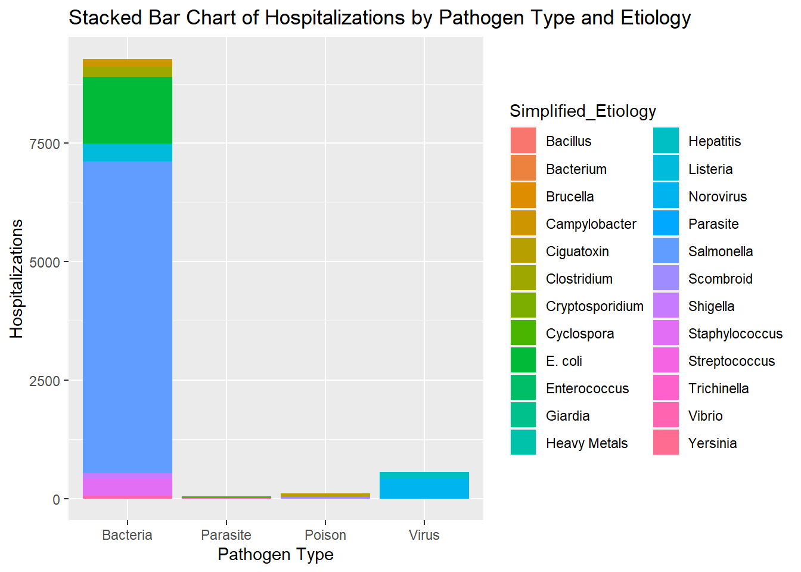
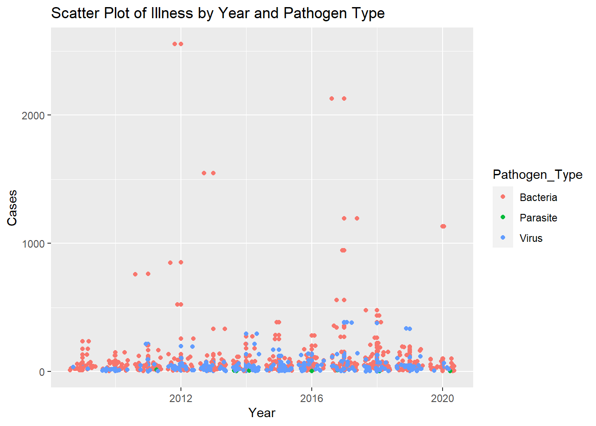
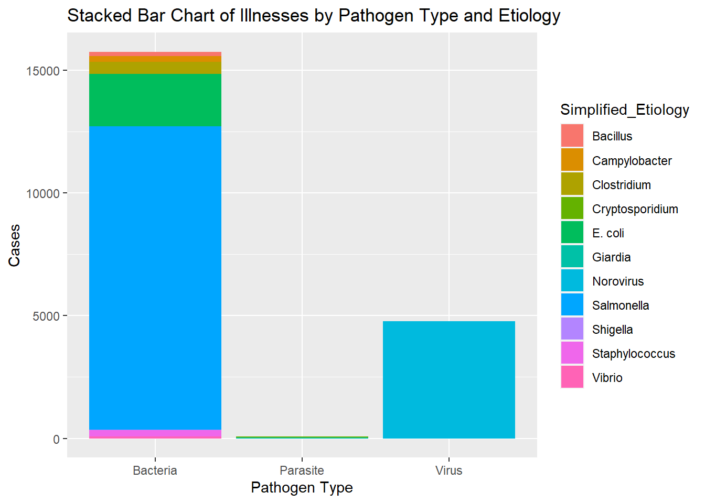

here() starts at C:/Users/weifa/OneDrive/Documents/GitKraken/MADA/data analysis/Weifan-Kailin-MADA-project
Load Data
Training Data
# Path to Datadata_location <-here("data","processed_data","processed_training_data.rds")# Import Datatraining_data_final <-readRDS(data_location)
Analysis Data
# Path to Datadata_location <-here("data","processed_data","processed_analysis_data.rds")# Import Dataanalysis_data_final <-readRDS(data_location)
Data Exploration
Training Data
The outcome of interest we will explore for the training data is hospitalizations.
# Time vs Hospitalizationsggplot(training_data_final %>%group_by(Year, Pathogen_Type, Hospitalizations) %>%count() %>%mutate(true_hospitalization = n * Hospitalizations), aes(x = Year, y = true_hospitalization, group = Pathogen_Type, color = Pathogen_Type)) +geom_point() +geom_jitter() +labs(x ="Year", y ="Hospitalizations", title ="Scatter Plot of Hospitalizations by Year and Pathogen Type")
## Save Graphggsave("time_v_hospitalization_pathogen_type.png", path ="results")
Saving 7 x 5 in image
# Pathogen Type + Etiology vs Hospitalizationggplot(training_data_final %>%group_by(Pathogen_Type, Simplified_Etiology, Hospitalizations) %>%count() %>%mutate(true_hospitalization = n * Hospitalizations), aes(x = Pathogen_Type, y = true_hospitalization, group = Simplified_Etiology, fill = Simplified_Etiology)) +geom_col() +labs(x ="Pathogen Type", y ="Hospitalizations", title ="Stacked Bar Chart of Hospitalizations by Pathogen Type and Etiology")

## Save Graphggsave("pathogen_type_etiology_v_hospitalizations.png", path ="results")
Saving 7 x 5 in image
## Closer Look at Bacterial Etiologies for Outbreaksggplot(training_data_final %>%select(Pathogen_Type, Simplified_Etiology, Hospitalizations) %>%filter(Pathogen_Type =="Bacteria"), aes(x = Simplified_Etiology)) +geom_bar() +labs(x ="Bacteria", y ="Hospitalizations", title ="Bar Chart of Bacteria Frequency")
# States vs Hospitalizationstate_v_hospitalization_training <- training_data_final %>%group_by(State) %>%mutate(all_hospitalizations =sum(Hospitalizations)) %>%count(all_hospitalizations) %>%select(State, all_hospitalizations) %>%arrange(desc(all_hospitalizations))saveRDS(state_v_hospitalization_training, file ="results/state_v_hospitalization_training.rds")rmarkdown::paged_table(state_v_hospitalization_training)
# Food Type and Hospitalizationsggplot(training_data_final %>%filter(`IFSAC Category`!="Multiple") %>%filter(`IFSAC Category`!="Other"), aes(x =`IFSAC Category`, y = Hospitalizations)) +geom_col() +labs(x ="Food Type", y ="Hospitalizations", title ="Hospitalizations by Food Type, Excluding 'Multiple' and 'Other'")
# Locations and HospitalizationsLocation_v_hospitalization=ggplot(training_data_final, aes(x = Location, y = Hospitalizations)) +geom_col() +labs(x ="Locations", y ="Hospitalizations", title ="Hospitalizations by Food Type, Excluding 'Multiple' and 'Other'")+scale_x_discrete(guide=guide_axis(n.dodge=3))Location_v_hospitalization
All outbreaks with a high hospitalization count (> 200 cases) are caused by bacteria. It also appears that most outbreaks caused by bacteria are due to Salmonella. California and Minnesota are the two states with the highest total hospitalization count due to foodborne illness from 1998 to 2015. Resturants and Private home are the most frequent locations with the highest total hospitalization count.
Analysis Data
# Illnesses Caused by Pathogen Type Over Timeggplot(analysis_data_final %>%group_by(Year, Pathogen_Type, Illnesses) %>%count() %>%mutate(true_illness_count = n * Illnesses), aes(x = Year, y = true_illness_count, group = Pathogen_Type, color = Pathogen_Type)) +geom_point() +geom_jitter() +labs(x ="Year", y ="Cases", title ="Scatter Plot of Illness by Year and Pathogen Type")

## Save Graphggsave("time_v_illness_pathogen_type.png", path ="results")
Saving 7 x 5 in image
# Pathogen Type + Etiology vs Illnesses Causedggplot(analysis_data_final %>%group_by(Pathogen_Type, Simplified_Etiology, Illnesses) %>%count() %>%mutate(true_illness_count = n * Illnesses), aes(x = Pathogen_Type, y = Illnesses, group = Simplified_Etiology, fill = Simplified_Etiology)) +geom_col() +labs(x ="Pathogen Type", y ="Cases", title ="Stacked Bar Chart of Illnesses by Pathogen Type and Etiology")

## Save Graphggsave("pathogen_type_etiology_v_illness.png", path ="results")
Saving 7 x 5 in image
## Closer Look at Bacterial Etiologiesggplot(analysis_data_final %>%group_by(Pathogen_Type, Simplified_Etiology, Illnesses) %>%filter(Pathogen_Type =="Bacteria"), aes(x = Simplified_Etiology)) +geom_bar() +labs(x ="Bacteria", y ="Cases", title ="Bar Chart of Bacteria Frequency")
# States vs Illnessesstate_v_illness_analysis <- analysis_data_final %>%group_by(State) %>%mutate(all_illnesses =sum(Illnesses)) %>%count(all_illnesses) %>%select(State, all_illnesses) %>%arrange(desc(all_illnesses))saveRDS(state_v_illness_analysis, file ="results/state_v_illness_analysis.rds")rmarkdown::paged_table(state_v_illness_analysis)
# Food Type and Illnessesggplot(analysis_data_final %>%filter(`IFSAC Category`!="Multiple") %>%filter(`IFSAC Category`!="Other"), aes(x =`IFSAC Category`, y = Illnesses)) +geom_col() +labs(x ="Food Type", y ="Illnesses", title ="Illnesses by Food Type, Excluding 'Multiple' and 'Other'")+scale_x_discrete(guide =guide_axis(n.dodge=3))
# Locations and Illnessesggplot(analysis_data_final, aes(x = Location, y = Illnesses)) +geom_col() +labs(x ="Locations", y ="Illnesses", title ="Illnesses by Locations")+scale_x_discrete(guide=guide_axis(n.dodge=3))
The outbreaks with a high number of cases (> 500) are caused by bacteria. The stacked barplot indicates that the top two etiologic agents that contribute to fooborne-illnesses are Salmonella and Norovirus, which belong to the pathogen type of Bacteria and Virus respectively. In bacterial pathogen, Salmonella genius is the most dominant factor that is associated with foodborne outbreaks, followed by E. coli species and Vibrio genius. Geographically speaking, Arkansas and Minnesota are the two states with the highest accumulated foodborne illnesses from 1998 to 2015. Salad, Poultry, and Fruits are the three most common types of food vectors that are involved in transmitting foodborne pathogens. Resturants and Private home are the most frequent locations that foodborne outbreaks occur. Overall, the relationships between predictors and outcomes of training dataset share similar patterns with those of analysis dataset.